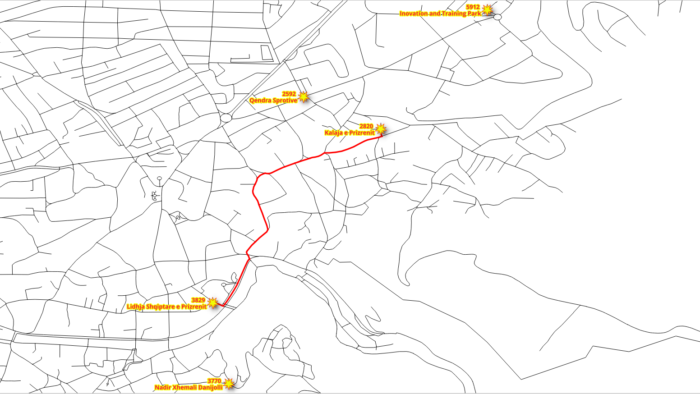
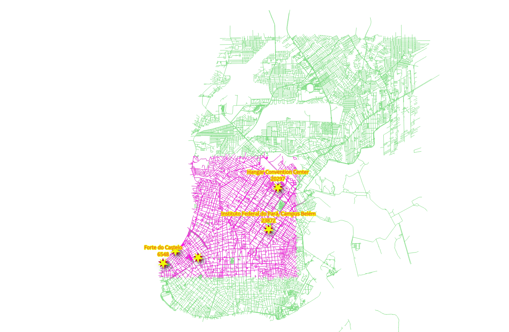
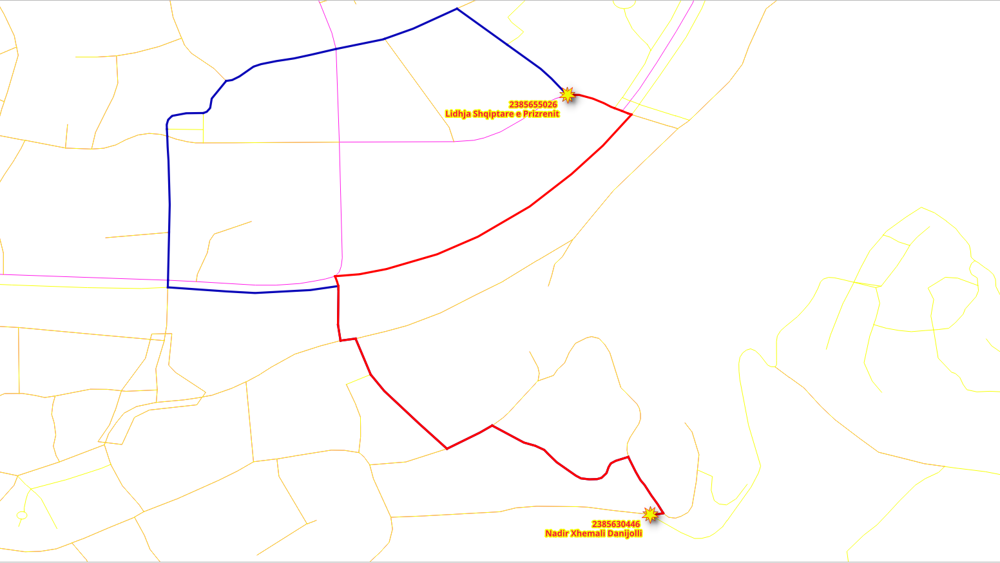

4. Vistas de gráficos¶
{kind=link}
Diferentes aplicaciones requieren diferentes gráficos. En este capítulo se explica cómo descartar segmentos desconectados y los distintos métodos para crear gráficos.
4.1. Requisitos del grafo¶
In this chapter there are three graph requirements. It consists on three graphs
based on a fully connected graph derived from ways: two for different types
of vehicles and one for pedestrian, the source and the target in all of them are
based on the source_osm and target_osm.
La descripción de los grafos:
Vehículo particular:
Circular por toda la zona de Belém.
No usar steps, footway, path, cycleway.
La velocidad es la velocidad predeterminada de la información de OSM.
Vehículo Taxi:
Circula en un área más pequeña:
Caja delimitadora:
(-48.52,-1.46,-48.45,-1.41)No usar steps, footway, path, cycleway.
La velocidad es 10% inferior a la de los vehículos particulares.
Peatones:
Caminar por toda la zona de Belém.
No se puede caminar por vías exclusivas para vehículos
En segmentos motorways y primary.
La velocidad es de
2 mts/sec.
4.2. pgr_extractVertices¶
pgr_extractVertices calcula los componentes conectados de un grafo no dirigido utilizando el método de búsqueda en profundidad. Un componente conectado de un grafo no dirigido es un conjunto de vértices que son todos alcanzables entre sí.
Resumen de la firma
pgr_extractVertices(Edges SQL, [dryrun])
RETURNS SETOF (id, in_edges, out_edges, x, y, geom)
OR EMTPY SET
La descripción de la función se encuentra en pgr_extractVertices
4.2.1. Ejercicio 1: Crear una tabla de vértices¶
Problema
Crea la tabla de vértices correspondiente a las aristas en ways.
Solución
Un grafo está formado por un conjunto de vértices y un conjunto de aristas.
En este caso, la tabla
wayses un conjunto de aristas.Para poder hacer uso de todas las funciones sobre grafos de pgRouting, es necesario tener definido el conjunto de vértices.
Según los requisitos, el grafo se basará en identificadores OSM.
SELECT * INTO ways_vertices
FROM pgr_extractVertices(
'SELECT gid AS id, source_osm AS source, target_osm AS target
FROM ways ORDER BY id');
SELECT 24229
Revisando de la descripción de la tabla de vértices
\dS+ ways_vertices
Table "public.ways_vertices"
Column | Type | Collation | Nullable | Default | Storage | Compression | Stats target | Description
-----------+------------------+-----------+----------+---------+----------+-------------+--------------+-------------
id | bigint | | | | plain | | |
in_edges | bigint[] | | | | extended | | |
out_edges | bigint[] | | | | extended | | |
x | double precision | | | | plain | | |
y | double precision | | | | plain | | |
geom | geometry | | | | main | | |
Access method: heap
Inspeccionando la información de la tabla de vértices
SELECT * FROM ways_vertices Limit 10;
id | in_edges | out_edges | x | y | geom
-------------+---------------+-------------+---+---+------
9394966362 | {25781,25782} | {488,16592} | | |
9019011681 | {23099} | {157,23098} | | |
11815385950 | {27717} | {133} | | |
9181303083 | {25473,31938} | {275,31880} | | |
370759582 | {507,508} | {87,26943} | | |
10047447949 | {26180} | {33,29142} | | |
4057861890 | {14889,14890} | {261,16280} | | |
606964623 | {7984} | {419,7985} | | |
491465232 | {1325,1326} | {467,13501} | | |
491465172 | {1268,1269} | {10} | | |
(10 rows)
4.2.2. Ejercicio 2: Llenar las otras columnas de la tabla de vértices¶
Problema
Llena la información de geometría en la tabla de vértices.
Solución
Contar el número de filas que hay que rellenar.
SELECT count(*) FROM ways_vertices WHERE geom IS NULL;
count
-------
24229
(1 row)
Update the
geomcolumns based on thesource_osmcolumn fromwaystable.Utilizar el punto inicial de la geometría.
UPDATE ways_vertices SET geom = ST_startPoint(the_geom) FROM ways WHERE source_osm = id;
UPDATE 21275
No se espera haber terminado debido a que algunos vértices son sólo callejones sin salida.
SELECT count(*) FROM ways_vertices WHERE geom IS NULL;
count
-------
2954
(1 row)
Actualizar las columnas
geombasándose en la columnatarget_osmde la tablaways.Utilizar el punto final de la geometría.
UPDATE ways_vertices SET geom = ST_endPoint(the_geom) FROM ways WHERE geom IS NULL AND target_osm = id;
UPDATE 2954
Se espera haber terminado, es decir la columna geometría no debe tener un valor NULL.
SELECT count(*) FROM ways_vertices WHERE geom IS NULL;
count
-------
0
(1 row)
Actualizar las columnas x e y en función de la columna geom.
UPDATE ways_vertices set (x,y) = (ST_X(geom), ST_Y(geom));
UPDATE 24229
4.3. pgr_connectedComponents¶
pgr_connectedComponents calcula los componentes conectados de un grafo no dirigido utilizando un método de búsqueda en profundidad. Un componente conectado de un grafo no dirigido es un conjunto de vértices que son todos alcanzables entre sí.
Resumen de la firma
pgr_connectedComponents(edges_sql)
RETURNS SET OF (seq, component, node)
OR EMPTY SET
La descripción de la función se encuentra en pgr_connectedComponents
4.3.1. Ejercicio 3: Establecer componentes en tablas de aristas y vértices¶
Problema
Obtener la información sobre los componentes del grafo.
Solución
Crear columnas adicionales en las tablas de aristas y vértices.
ALTER TABLE ways ADD COLUMN component BIGINT;
ALTER TABLE ways_vertices ADD COLUMN component BIGINT;
ALTER TABLE
ALTER TABLE
Utilizar
pgr_connectedComponentspara llenar la tabla de vértices.Utilizar los resultados para almacenar los números de los componentes en la tabla de vértices. (línea 1)
Utilizar los identificadores OSM de los vértices. (líneas 4-5)
UPDATE ways_vertices SET component = c.component
FROM (SELECT * FROM pgr_connectedComponents(
'SELECT gid as id,
source_osm AS source,
target_osm AS target,
cost, reverse_cost FROM ways'
)) AS c
WHERE id = node;
UPDATE 24229
Actualizar la tabla de aristas con en función del número de componente del vértice
UPDATE ways SET component = v.component
FROM (SELECT id, component FROM ways_vertices) AS v
WHERE source_osm = v.id;
UPDATE 32586
4.3.2. Ejercicio 4: Inspeccionar los componentes¶
Problema
Responder a las siguientes preguntas:
¿Cuántos componentes hay en la tabla de vértices?
¿Cuántos componentes hay en la tabla de bordes?
Enumerar los 10 componentes con más aristas.
Obtiener el componente con el máximo número de aristas.
Solución
¿Cuántos componentes hay en la tabla de vértices?
Contar los componentes distintos.
SELECT count(DISTINCT component) FROM ways_vertices;
count
-------
108
(1 row)
¿Cuántos componentes hay en la tabla de bordes?
Contar los componentes distintos.
SELECT count(DISTINCT component) FROM ways;
count
-------
108
(1 row)
Enumerar los 10 componentes con más aristas.
Número de filas agrupadas por componente. (línea 1)
Orden inverso para mostrar los 10 primeros. (línea 2)
SELECT component, count(*) FROM ways GROUP BY component
ORDER BY count DESC LIMIT 10;
component | count
-------------+-------
247780039 | 32164
5857529375 | 117
11351599106 | 22
4321917778 | 19
11177916097 | 17
6117200807 | 15
3976699256 | 14
11776230037 | 13
11177916268 | 10
11352002684 | 10
(10 rows)
Obtiener el componente con el máximo número de aristas.
Utilizar la consulta de la última pregunta para obtener el recuento máximo
Obtiene el componente que coincide con el valor máximo.
WITH
all_components AS (SELECT component, count(*) FROM ways GROUP BY component),
max_component AS (SELECT max(count) from all_components)
SELECT component FROM all_components WHERE count = (SELECT max FROM max_component);
component
-----------
247780039
(1 row)
4.4. Preparación de los grafos¶
4.4.1. Ejercicio 5: Creación de una vista para el ruteo¶

Problema
Crear una vista con una cantidad mínima de información para procesar los vehículos particulares.
Utilizar los identificadores OSM en los vértices.
El cost y reverse_cost del ruteo en términos de segundos para los cálculos de ruteo.
Excluye los segmentos steps, footway, path, cycleway.
Datos necesarios en la vista para su posterior procesamiento.
name El nombre del segmento.
length_m La longitud en metros renombrar a
length.the_geom El cambio de nombre de la geometría a
geom.
Comprobar que se ha reducido el número de aristas.
Solución
Creación de la vista:
Si necesita reconstruir la vista, primero borrarla usando el comando en línea 1.
Obtener el componente con el máximo número de aristas (líneas 6-10)
Los requisitos source y target para la función deben ser con identificadores OSM. (línea 14)
El
costey elreverse_costse expresan en segundos. (línea 15)Los parámetros adicionales
length_mythe_geomse renombran, también se incluyename. (línea 16)JOINcon configuration:Excluir steps, footway, path, cycleway. (línea 18)
-- DROP VIEW vehicle_net CASCADE;
CREATE VIEW vehicle_net AS
WITH
all_components AS (SELECT component, count(*) FROM ways GROUP BY component), -- line 6
max_component AS (SELECT max(count) from all_components),
the_component AS (
SELECT component FROM all_components
WHERE count = (SELECT max FROM max_component))
SELECT
gid AS id,
source_osm AS source, target_osm AS target, -- line 14
cost_s AS cost, reverse_cost_s AS reverse_cost,
name, length_m AS length, the_geom AS geom
FROM ways JOIN the_component USING (component) JOIN configuration USING (tag_id)
WHERE tag_value NOT IN ('steps','footway','path','cycleway'); -- line 18
CREATE VIEW
Verificación:
Cuenta las filas en el camino original y en red_vehículos.
SELECT count(*) FROM ways;
SELECT count(*) FROM vehicle_net;
count
-------
32586
(1 row)
count
-------
27632
(1 row)
Obtener la descripción de la vista
\dS+ vehicle_net
View "public.vehicle_net"
Column | Type | Collation | Nullable | Default | Storage | Description
--------------+---------------------------+-----------+----------+---------+----------+-------------
id | bigint | | | | plain |
source | bigint | | | | plain |
target | bigint | | | | plain |
cost | double precision | | | | plain |
reverse_cost | double precision | | | | plain |
name | text | | | | extended |
length | double precision | | | | plain |
geom | geometry(LineString,4326) | | | | main |
View definition:
WITH all_components AS (
SELECT ways_1.component,
count(*) AS count
FROM ways ways_1
GROUP BY ways_1.component
), max_component AS (
SELECT max(all_components.count) AS max
FROM all_components
), the_component AS (
SELECT all_components.component
FROM all_components
WHERE all_components.count = (( SELECT max_component.max
FROM max_component))
)
SELECT ways.gid AS id,
ways.source_osm AS source,
ways.target_osm AS target,
ways.cost_s AS cost,
ways.reverse_cost_s AS reverse_cost,
ways.name,
ways.length_m AS length,
ways.the_geom AS geom
FROM ways
JOIN the_component USING (component)
JOIN configuration USING (tag_id)
WHERE configuration.tag_value <> ALL (ARRAY['steps'::text, 'footway'::text, 'path'::text, 'cycleway'::text]);
4.4.2. Ejercicio 6: Limitar la red de carreteras de una zona¶
{kind=link}
Problema
Crar una vista
taxi_netpara el taxi:El taxi sólo puede circular dentro de este recuadro:
(-48.52,-1.46,-48.45,-1.41)La velocidad de taxi es 10% inferior a la del vehículo particular.
Verificar el número reducido de segmentos de carretera.
Solución
Creación de la vista:
Ajustar el
costy elreverse_costdel taxi para que sean 10% más bajos que los del vehículo particular. (línea 7)El grafo del taxi es un subconjunto del grafo
vehicle_net. (línea 9)Sólo puede circular dentro de la caja delimitadora:
(-48.52,-1.46,-48.45,-1.41). (línea 10)
-- DROP VIEW taxi_net;
CREATE VIEW taxi_net AS
SELECT
id,
source, target,
cost * 1.10 AS cost, reverse_cost * 1.10 AS reverse_cost,
name, length, geom
FROM vehicle_net
WHERE vehicle_net.geom && ST_MakeEnvelope(-48.52,-1.46,-48.45,-1.41);
CREATE VIEW
Contar las filas en taxi_net.
SELECT count(*) FROM taxi_net;
count
-------
9180
(1 row)
Obtener la descripción.
\dS+ taxi_net
View "public.taxi_net"
Column | Type | Collation | Nullable | Default | Storage | Description
--------------+---------------------------+-----------+----------+---------+----------+-------------
id | bigint | | | | plain |
source | bigint | | | | plain |
target | bigint | | | | plain |
cost | double precision | | | | plain |
reverse_cost | double precision | | | | plain |
name | text | | | | extended |
length | double precision | | | | plain |
geom | geometry(LineString,4326) | | | | main |
View definition:
SELECT vehicle_net.id,
vehicle_net.source,
vehicle_net.target,
vehicle_net.cost * 1.10::double precision AS cost,
vehicle_net.reverse_cost * 1.10::double precision AS reverse_cost,
vehicle_net.name,
vehicle_net.length,
vehicle_net.geom
FROM vehicle_net
WHERE vehicle_net.geom && st_makeenvelope('-48.52'::numeric::double precision, '-1.46'::numeric::double precision, '-48.45'::numeric::double precision, '-1.41'::numeric::double precision);
4.4.3. Ejercicio 7: Creación de una vista materializada para el ruteo de peatones¶

Problema
Crear una vista materializada con una cantidad mínima de información para procesar peatones.
El costo de ruteo en cost y reverse_cost será en segundos para los cálculos de ruteo.
La velocidad es de
2 mts/sec.
Excluir segmentos motorway , primary y secondary.
Datos necesarios en la vista para su posterior procesamiento.
length_m La longitud en metros.
the_geom La geometría.
Comprobar que se ha reducido el número de aristas.
Solución
Creación de la vista:
Similar al Ejercicio 5: Creación de una vista para el enrutamiento:
costyreverse_costse expresan en términos de segundos con velocidad de2 mts/sec. (línea 7)Excluir motorway, primary y secondary. (línea 11)
-- DROP MATERIALIZED VIEW walk_net CASCADE;
CREATE MATERIALIZED VIEW walk_net AS
WITH
allc AS (SELECT component, count(*) FROM ways GROUP BY component),
maxcount AS (SELECT max(count) from allc),
the_component AS (SELECT component FROM allc WHERE count = (SELECT max FROM maxcount))
SELECT
gid AS id,
source_osm AS source, target_osm AS target,
cost_s AS cost, reverse_cost_s AS reverse_cost,
name, length_m AS length, the_geom AS geom
FROM ways JOIN the_component USING (component) JOIN configuration USING (tag_id)
WHERE tag_value NOT IN ('motorway','primary','secondary');
SELECT 28450
Contar las filas de la vista walk_net.
SELECT count(*) FROM walk_net;
count
-------
28450
(1 row)
Obtener la descripción.
\dS+ walk_net
Materialized view "public.walk_net"
Column | Type | Collation | Nullable | Default | Storage | Compression | Stats target | Description
--------------+---------------------------+-----------+----------+---------+----------+-------------+--------------+-------------
id | bigint | | | | plain | | |
source | bigint | | | | plain | | |
target | bigint | | | | plain | | |
cost | double precision | | | | plain | | |
reverse_cost | double precision | | | | plain | | |
name | text | | | | extended | | |
length | double precision | | | | plain | | |
geom | geometry(LineString,4326) | | | | main | | |
View definition:
WITH allc AS (
SELECT ways_1.component,
count(*) AS count
FROM ways ways_1
GROUP BY ways_1.component
), maxcount AS (
SELECT max(allc.count) AS max
FROM allc
), the_component AS (
SELECT allc.component
FROM allc
WHERE allc.count = (( SELECT maxcount.max
FROM maxcount))
)
SELECT ways.gid AS id,
ways.source_osm AS source,
ways.target_osm AS target,
ways.cost_s AS cost,
ways.reverse_cost_s AS reverse_cost,
ways.name,
ways.length_m AS length,
ways.the_geom AS geom
FROM ways
JOIN the_component USING (component)
JOIN configuration USING (tag_id)
WHERE configuration.tag_value <> ALL (ARRAY['motorway'::text, 'primary'::text, 'secondary'::text]);
Access method: heap
4.4.4. Ejercicio 8: Comprobación de las vistas para el ruteo¶
{kind=link}
Problema
Probar las vistas creadas
En particular:
Desde «Estação das Docas» hacia «Hangar Convention Center» usando el identificador OSM
las vistas a probar son:
``vehicle_net`
taxi_netwalk_net
Mostrar únicamente los siguientes resultados, ya que las demás columnas deben omitirse en la función.
seqedgecon el nombreidcostcon el nombre:seconds
Solución
En general
El punto de partida es Estação das Docas con el identificador OSM
5661895682.El destino es Hangar Convention Center con el identificador OSM
10982869752.
Para vehicle_net:
Se utiliza
vehicle_net.La selección de las columnas con los nombres correspondientes está en línea 1.
La vista se prepara con los nombres de columna que pgRouting utiliza.
No es necesario cambiar el nombre de las columnas. (línea 3)
Se utilizan los identificadores OSM del punto de partida y del destino. (línea 4)
1SELECT start_vid, end_vid, agg_cost AS seconds
2FROM pgr_dijkstraCost(
3 'SELECT * FROM vehicle_net',
4 5661895682, 10982869752);
start_vid | end_vid | seconds
------------+-------------+-------------------
5661895682 | 10982869752 | 465.6834621403192
(1 row)
Para taxi_net:
Similar al anterior pero con
taxi_net(línea 3)The results give the same route as with
vehicle_netbutcostis higher
SELECT start_vid, end_vid, agg_cost AS seconds
FROM pgr_dijkstraCost(
'SELECT * FROM taxi_net',
5661895682, 10982869752);
start_vid | end_vid | seconds
------------+-------------+-------------------
5661895682 | 10982869752 | 512.2518083543514
(1 row)
Para walk_net:
Similar al anterior pero con
walk_net. (línea 3)Los resultados dan una ruta diferente a la de los vehículos.
SELECT start_vid, end_vid, agg_cost AS seconds FROM pgr_dijkstraCost( 'SELECT * FROM walk_net', 5661895682, 10982869752);
start_vid | end_vid | seconds
-----------+---------+---------
(0 rows)